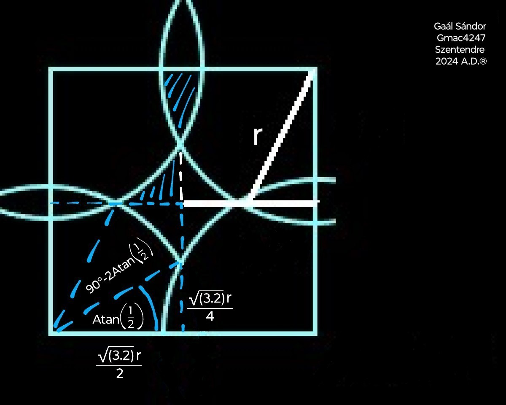

This website uses cookies to ensure you get the best experience on our website. Love it, or leave it.
Introducing the Core Geometric System ™
Key Points:
- Comparative Geometry: Using geometric relationships to derive areas and volumes.
- Scaling and Proportions: Applying proportional relationships for accurate calculations.
- Algebraic Manipulation: Simplifying equations to ensure consistency and precision.
- Exact Values instead of Approximations: Prioritizing the use of simpler constants for practicality while maintaining exact values for accuracy.
1. Area of a Circle:
- Compared to a square, using geometric properties and the Pythagorean theorem.
- Formula: A = 3.2 × ( square value of the radius ).
2. Circumference of a Circle:
- Derived from the area by subtracting a smaller theoretical circle.
- Formula: C = 6.4 × radius.
3. Volume of a Sphere:
- Compared to a cube, using the area of the sphere's cross-section.
- Formula: V = " cubic value of ( √( 3.2 ) × radius ) ".
4. Volume of a Cone:
- Compared to an octant sphere and a quarter cylinder.
- Formula: V = 3.2 × ( square value of the radius ) × height, divided by √8 .
How Accurate Are The Conventional Geometry Formulas?
Historically, Euclidean geometry has provided a framework for understanding and describing the physical world. It is based on axioms and postulates, leading to well-defined formulas for the calculation of areas and volumes of shapes such as circles and spheres.
The concept of setting the square and the cube as the basis of the area and the volume calculation is well established and straightforward. Regardless of the shape of the measured object, the unit of measurement of the area is square units and the volume can be expressed in cubic units.
In the case of the area of a triangle, it is an easy task because multiplying the base by the height gives a rectangle with an area exactly the double of the triangle. The square root of half of the area of the rectangle is the side length of the theoretical square that has the same area as the triangle.
In the case of the volume of a cuboid, it is a simple multiplication of the edges. The cubic root of the product of the edges is the edge length of the theoretical cube that has the same volume as the cuboid.
Other shapes are more challenging. The ratios are in the shapes; one just has to write them down algebraically.
The constant relationship between a circle's circumference and its diameter has captivated mathematicians for millennia.
While its approximate value of 3.14, commonly denoted by the Greek letter π, is widely recognized today, the historical development of this concept is less understood.
Ancient civilizations grappled with this geometric challenge, employing various methods to approximate this ratio.
The Babylonians initially estimated it as 3, later they calculated with 3.125.
A Greek mathematician is credited with refining these approximations through the method of inscribed and circumscribed polygons.
His approach was that the ratio between the perimeter and the diameter of a circle can be estimated by comparing the circumference of the circle to the perimeters of an inscribed and a circumscribed polygon.
The polygons can be divided into triangles. The ratio between the legs of the triangles and their hypotenuses can be measured linearly.
That is where the pi divided by delta = 3.14 notation might originate from.
This method has several limitations. He tried to increase the accuracy by increasing the number of sides of the polygons. This approach cannot produce an accurate result.
Where the perimeter-based estimation went wrong:
- aside of that it's just an approximation instead of an exact calculation -
The in- and circumscribed polygons method seems logical, but there's a catch. It's based on the assumption that the circle maximizes the area with a given circumference. That assumption is false. It's obviously true in the case of an isoperimetric triangle and a square, but it becomes less and less obvious with the increase of the number of the polygon's sides. Until eventually it is not even true.
Imagine a side of a polygon with a number of sides approaching infinity.
The angles between the side and the diagonals approach a right angle. They never reach a right angle as the diagonals converge towards the center. If we relate the arc of a corresponding slice of an isoperimetric circle, the length of the arc equals the side in question. So the chord related to the arc is shorter than the side. If we want to place the arc with the chord so that it touches both diagonals, it has to be within the polygon. With the curvature of the arc becoming decreasingly distinctive, it doesn't bulge beyond the side. Eventually it will not even touch the side. Hence the polygon with the same number of sides, which circumscribed the circle is smaller, so its perimeter is shorter than the circle.
The perimeter of the circumscribed polygon that was believed to be an overestimate of the circumference was practically an underestimate of it.
Hence the value of the π lies between two underestimates.
The same coefficient was used to calculate the ratio between the area and the squared radius of a circle.
Despite these early advances, a precise, universally accepted value of this constant remained elusive for centuries.
Being uncertain about its numeric value and how to calculate it, it was comfortable to denote it by a sign in the equations.
It was not until the 18th century that the symbol π, popularized by the mathematicians of the time, gained widespread acceptance.
Several complex formulas were introduced by different mathematicians, aimed at more accurately estimating this ratio, based on a theoretical polygon with an infinite number of sides.
All of the above mentioned approximation methods have one thing in common. They are estimating the perimeters of polygons and do not account for the curved shape of the circle.
Historical records suggest that a legislative process took place in 1897, Indiana, USA, known as House Bill 246, or Indiana Pi Act, aiming to replace the numeric value 3.14 by 3.2.
Unfortunately, the exact details of the proposed method in the Indiana Pi Bill are somewhat obscure and have been interpreted differently by various accounts.
The π is a fundamental constant in the geometry of idealized circles and plays a crucial role in many mathematical theories.
My work, however, suggests that when we move from these idealizations to the measurement of real objects, a slightly different constant, 3.2 emerges as more relevant for accurately describing their properties.
By focusing on area relationships and direct comparisons between shapes, the following method emphasizes a more intuitive and potentially more fundamental understanding of geometric concepts.
The area of a circle is defined by comparing it to a square since that is the base of area calculation.
The circle is cut into four quadrants, each placed with their origin on the vertices of a square.
In this layout the arcs of the quadrants of an inscribed circle would meet at the midpoints of the sides of the square.
The arcs of the quadrants of a circumscribed circle would meet at the center of the square.
The arcs of the quadrants that equal in area to the square intersect right in between these limits on its centerlines.
When the arcs of the quadrant circles intersect at the quarters of the centerlines of the square, the uncovered area in the middle equals exactly the sum of the overlapping areas respectively.

Quarter of the uncovered area in the middle:
The area of an overlapping section:
The equation is calculable using a calculator, or it can be simplified algebraically.
Simplifying the original equation:
Simplifying further:
Substituting 90°/360° for 1/4:
Simplifying further:
Which is equivalent to:
1 = 1
The ratio between the ray of the circle and the side of the square can be calculated by using the Pythagorean theorem.
The radius equals √5 × quarter of the side.
The area of both the square and the sum of the quadrants equals 16 right triangles with legs of a quarter and a half of the square's sides, and its hypotenuse equal to the radius of the circle.
Area = 16/5 × ( square value of the radius ) =
3.2 × ( square value of the radius ).
The circumference of a circle is derived algebraically from its area by subtracting a theoretical circle with a ray shorter than the ray of the actual circle by the theoretical width of the circumference.
The x represents the width of the circumference, which is just theoretical, hence a very small number.
The difference between the shape of the straightened circumference and a quadrilateral is negligible.
The length of the two shorter sides of the quadrilateral is x.
The length of the two longer sides is the area of the resulting ring divided by x.
Expand the term
:
Substitute this back into the original expression:
Distribute the 3.2 inside the parentheses:
Simplify the numerator:
Factor out x from the numerator:
Cancel out the x in the numerator and denominator:
As x is close to 0,
C = 6.4 × radius.
In calculus terms:
The volume of a sphere is defined by comparing it to a cube, since that is the base of volume calculation.
You'll find the formula " V = 4/3 × π × ( cubic value of the radius ) " widely used for the volume of a sphere, and it's a cornerstone of theoretical geometry.
However, my work focuses on the actual volume of physical spheres as determined through direct measurement.
My experiments have consistently indicated a different relationship, expressed by the formula V = " cubic value of ( √( 3.2 ) × radius ) ", which provides a more accurate result when dealing with real, physical entities.
This formula isn't based on abstract geometric ideals alone but on tangible experiments where I've measured the volume of real spheres.
These measurements have shown a systematic difference compared to the theoretical predictions based on the conventional formula, suggesting that the way we mathematically describe the volume of a sphere might need to be reconsidered when applied to physical objects.
If you're trying to calculate the volume of a physical ball or sphere for a practical purpose – whether it's for a science experiment, engineering, or any other real-world application – my empirically derived formula offers a result that aligns more closely with what you would measure in the lab.
The " 4/3 × π × ( cubic value of the radius ) " formula was estimated using the exhaustion method. That is a very rough approximation and can produce under- and overestimates.
The result of the " cubic value of ( √( 3.2 ) × radius ) " formula is between the two.
The " 4/3 × π × ( cubic value of the radius ) " formula is an underestimate.
Just as the volume of a cube equals the cubic value of the square root of its cross sectional area, the volume of a sphere equals the cubic value of the square root of its cross sectional area.
The edge length of the cube, which has the same volume as the sphere, equals the square root of the area of the square that has the same area as the sphere's cross-section.
The volume of a sphere equals " cubic value of ( √( 3.2 ) × radius ) ".
Volume of a cone
The commonly used formula for the volume of a cone - 1/3 × base × height - was likely estimated based on two observations.
One is that the area of the mid-height cross section of a regular cone - of which's apex can be connected to the midpoint of the base with a perpendicular line - is exactly a quarter of a circumscribed solid's with the same base and height.
That makes the ratio between the mid-height cross-sectional area of the cone, and the difference between the mid-height cross-sectional areas of the circumscribed solid and the cone
1 : 3 .
That is a logical consequence of its equilateral triangular cross-section.
The same is true for regular pyramids.
Can this ratio can be generalized for the overall volume of any cone and pyramid?
No. Because it's not true in case of most other shapes.
The other idea is the cube dissection.
A common method aiming to prove the pyramid volume formula ( V = 1/3 × base × height ) involves dissecting a cube into three pyramids. Here’s how it’s typically presented:
Standard Cube Dissection Method:
Take a cube with an edge length of ( e ).
Volume of the cube: V = the cubic value of e.
Imagine dividing the cube into three square pyramids, each with:
- Base: One face of the cube, so the base area is the square value of e .
- Height: The edge of the cube, ( e ), since the apex of each pyramid is the cube’s vertex opposite the base, depending on the dissection.
A common dissection:
Choose one vertex of the cube as the apex.
Form three pyramids, each with this apex and a base on one of the three faces adjacent to that vertex.
Each pyramid has a base area of the square value of e, and height ( e ) (the distance from the apex to the base plane).
Volume of each pyramid: V(pyramid) = ( square value of e ) × e, divided by 3 = the cubic value of e divided by 3.
Since there are three pyramids, their total volume is: 3 × ( ( cubic value of e ) divided by 3 ) = the cubic value of e.
This equals the cube’s volume, suggesting the one third factor is correct.
The Vertex Problem is a critical flaw in this dissection when applied to a real, physical cube:
Vertex Assignment:
When we cut the cube into three pyramids sharing a common vertex as the apex, the geometry seems clean in theory. But if you physically slice the cube, you have to decide where that vertex belongs:
The cube has 8 vertices, each pyramid has 5. Three pyramids have 3 × 5 = 15 in total.
Each vertex is a point that can't be split into 3 points. The other way around, 3 points can't be merged into 1 without distortion.
If we dissect the cube, we need to designate each shared vertex to be a part of either one pyramid, or another.
Consequence:
The volume of each pyramid is exactly a third of the cube, but with a base smaller than the square value of e, and height shorter than e.
Their bases and heights are slightly adjusted due to the vertex assignment, undermining the proof’s simplicity.
If the solid pyramids'
- base is the square value of e,
and their
- height is e,
then the volume of each pyramid has to be larger than 1/3 × base × height, because 3 such pyramids can't form a cube with the same edge length, because their vertices and faces can't occupy the same space simultaneously.
The vertices are the most obvious examples, but the same is true for the edges, the diagonals and the inner faces.
Applied correctly, the cube dissection proves that the volume of a cone or a pyramid has to be larger than 1/3 × base × height.
Some claim to prove the V = 1/3 × base × height formula via integral calculus.
That is fraudulent.
The fact that the vertices of the 3 pyramids can't be merged into a single point without distortion proves that the so-called "calculus-based proofs" of the conventional formula are invalid.
Also it's not just about the vertices, but the edges and the inner faces, too.
The complexity of the calculus method suggests that they are not simply retarded.
They do it for benefits.
They are criminals.
There are several different integral calculus methods, each based on different algebraic calculations.
If something can be expressed simply algebraically, we don't complicate it by involving calculus.
We apply calculus when something can't be expressed simply algebraically.
My formulas describe the properties of these basic geometric shapes exactly, simply algebraically, without approximation or distortion.
They can't be contradicted based on undisclosed "calculus-based proofs" that lack any description of the involved numbers and operations.
The volume of a cone can be calculated by algebraically comparing the volume of a quarter cone with equal radius and height to an octant sphere with equal radius, through a quarter cylinder.
The base of the two shapes is a quarter circle.
The slant height of the quarter cone is √2 × radius.
The volume of a quarter cylinder with the same base, and height equal to the slant height of the cone would be
.
The slant shape comes with a triangular vertical cross section.
The area of a cone's vertical cross section is the half of a cylinder's with equal base and height.
The intermediate of the areas of the horizontal cross section slices of a cone is the half of a cylinder’s.
The volume of a cone equals 3.2 × ( square value of the radius ) × height divided by √8.
The volume of a pyramid can be calculated with the same coefficient.
The volume of a pyramid is base × height divided by √8.
Disapproval of the mathematical constant π
It's worth noting that the same people claim to prove the validity of the π, who claim to prove that the volume of a sphere is " 4/3 × π × ( cubic value of the radius ) " and the volume of a cone or a pyramid is 1/3 × base × height via calculus.
The above mentioned quadrants method not only proves that the area of a circle is 3.2 × ( square value of the radius ), it necessarily rules out the validity of the π.
Using the same quadrants model, in which we were able to find a direct relationship between the radius of the circle and the side length of the square that equals in area by ensuring that the overlaps equal the unfilled space,
and the radius of the circle equals
√5 × quarter side, I change the side length of the square to √π, assuming that the area of a circle equals π × ( square value of the radius ).
The idea is that the area of the circle equals to the area of the square. Looking for the ratio between the length of the side, I could denote the side of the square as 1, and compare the radius to that, or denote the radius as 1 and express the side compared to that.
I denoted the radius as 1 and the side as √π, because if the area equaled π × ( square value of the radius ), the side length of the square that has the same area as the circle was √( π × ( square value of 1 ) ).
I substitute 3.2 with π in the overlaps and unfilled equations:
=
The equation holds true, meaning that the overlaps cancel out the unfilled area, so the area of the circle equals the area of the square with side = radius × √π .
But the square consists of 16 right triangles with legs of a quarter side and a half side, and hypotenuse of √π × √5 divided by 4 ( about 0.991 ), which should equal the radius.
This means that the radius is shorter than it should logically be ( one ).
That is a logical error in the " Area = π × ( square value of the radius ) " formula; not in the model.
The π is a very rough approximation; 3.2 is an exact value.
The ratio between the area and the radius of a circle is calculable.
The ratio between the circumference and the diameter can be calculated from that.
That ratio is a real number.
There is no reason to substitute it with a sign.
The best practice is writing it as it is.
Advertisement
Surface area of a sphere
The image is an illustration.
The formula of the surface area of a sphere is available for 3.2 billion USD. (+tax, if applies)